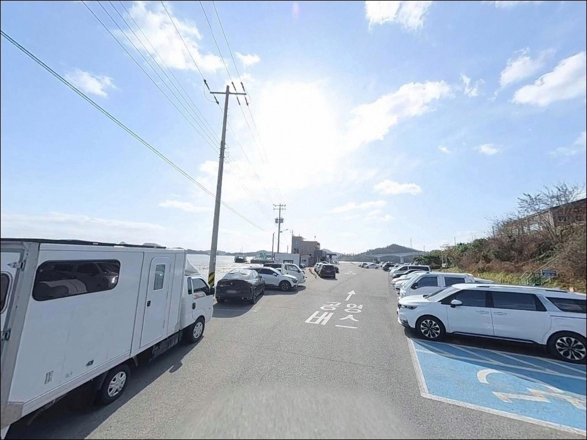
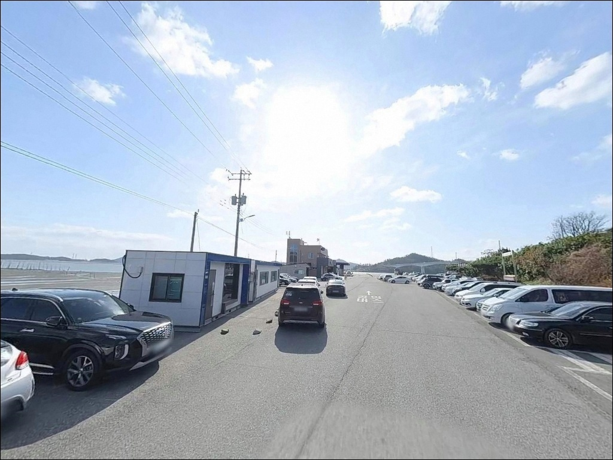
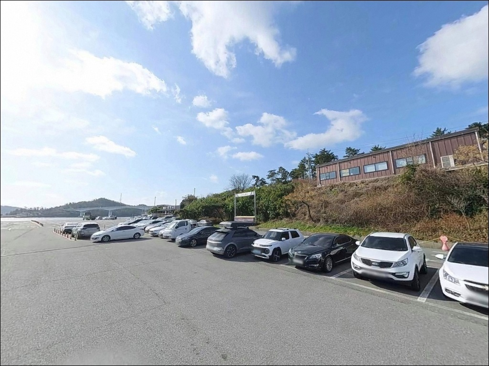
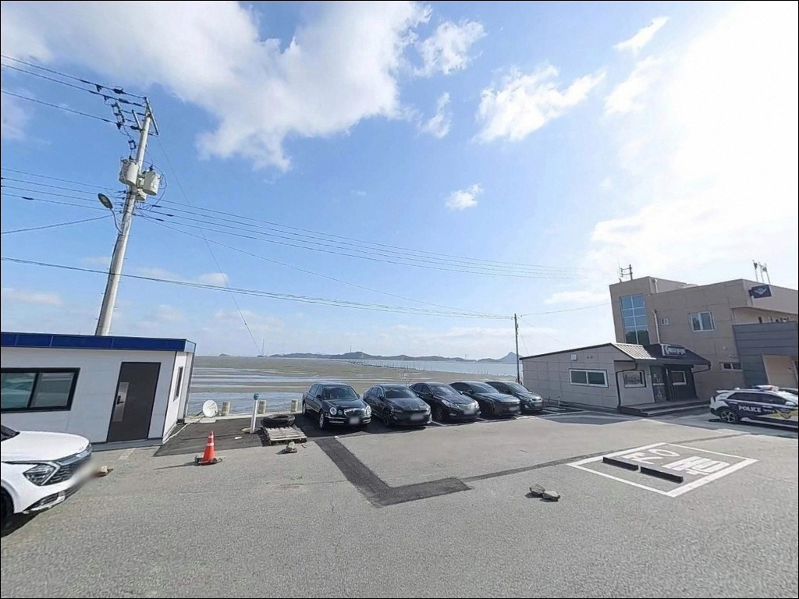
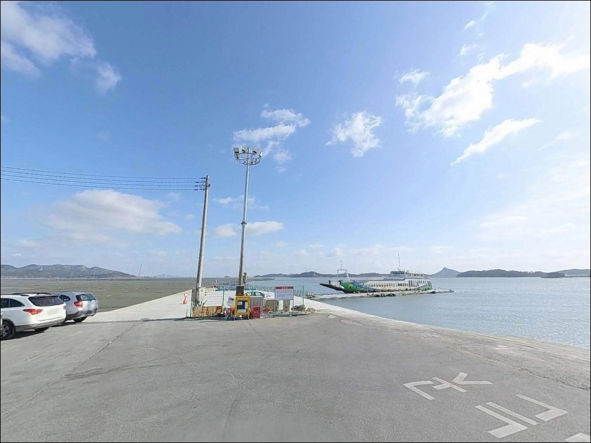
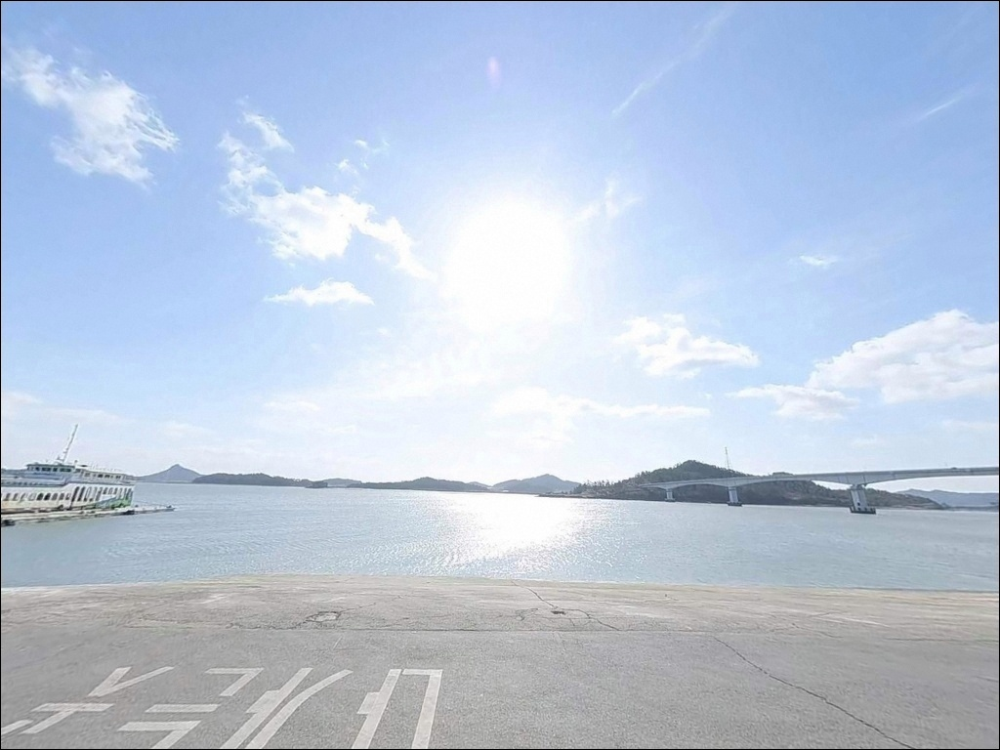
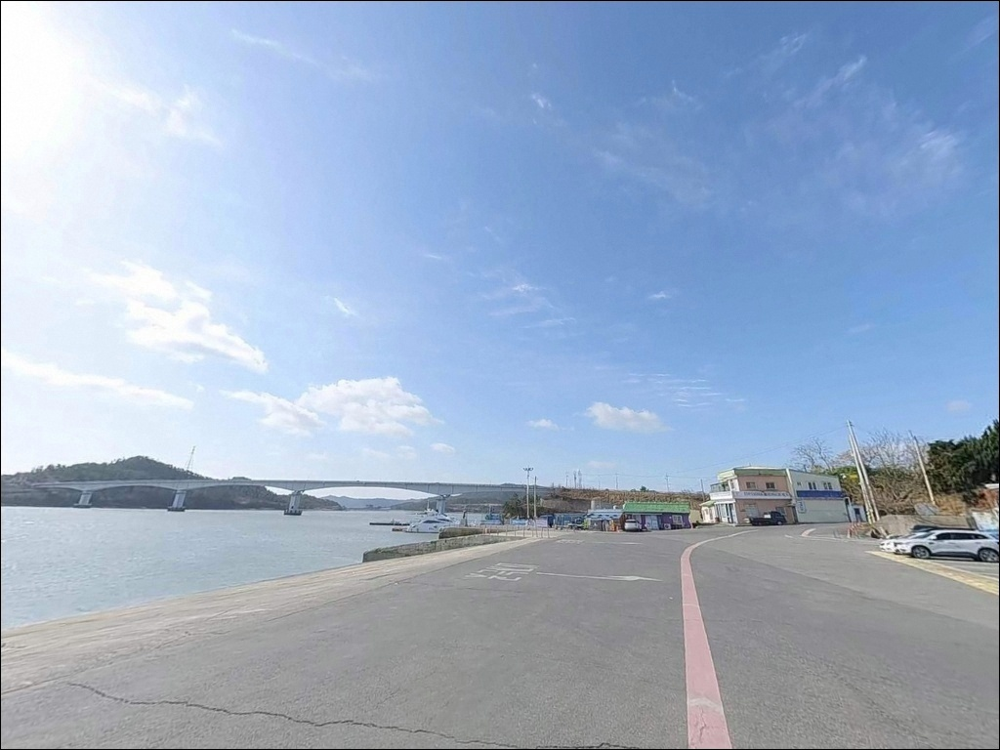
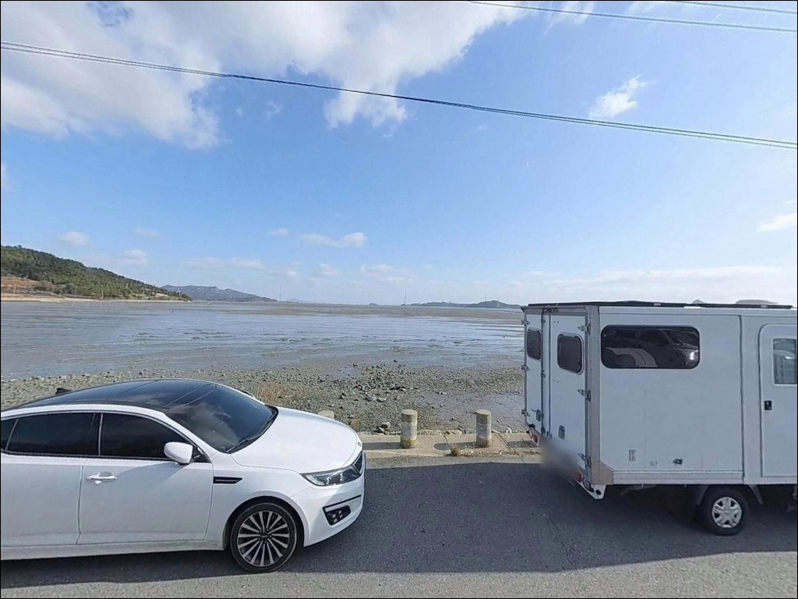

암태도 남강선착장
전남 신안군 암태면 와촌리 683
조류 세기를 확인하지 않고 사리 전후 타이밍에
이 선착장에 진입하면,
채비가 흐름을 버티지 못하고
바닥을 긁다 끊어집니다.
암태도와 팔금도 사이 수로는
최대 3.6노트의 조류가 집중되는 구조로,
물때 계산 없는 출조는
낚시 자리는 있어도 낚시는 안 되는
상황을 만듭니다.
천사대교를 건너 암태도로 들어서면
중부로를 따라 와촌리 끝까지
포장도로가 이어집니다.
비금도·도초도 방면 카페리가 오가는
여객선 터미널을 기점으로,
선착장 끝단과 수로 방향이
이 포인트의 핵심 공략 자리입니다.
이 글은 남강선착장의 진입 동선,
물때 판단 기준, 지형 기반 낚시 공략 조건에 집중합니다.
조황 단정이나 특정 어종 보장은
이 글의 범위에 포함되지 않습니다.

1. 진입 동선과 포인트 접근성
육지에서 천사대교를 건너면
암태도 중부로를 따라 와촌리까지
전 구간 포장도로가 이어집니다.
비금도·도초도행 카페리가 운항하는
여객선 터미널이라
대형 차량도 진입과 회차에 큰 어려움이 없는
접근성입니다.
주차는 터미널 전면에 조성된
무료 포장 주차장을 이용하는 방식이 기본입니다.
여객선 이용객 대기 차량이 공유하는 구조이므로
탑승 대기 동선과 겹치지 않는 자리를
먼저 확인하는 편이 좋습니다.
이른 아침 첫 배 출발 전후에는
차량 이동이 발생하는 시간대임을 감안해
주차 위치를 정하는 것이 기본 준비입니다.

2. 차박 환경과 야간 체류 여건
여객선 터미널 특성상
야간에도 기본 조명이 가동되는 환경입니다.
완전 외딴 갯바위 포인트와 달리
어둠 속에서 짐을 풀 필요가 없다는 점은
장점이지만,
인근 와촌리 마을과 맞닿아 있어
고요한 고립형 차박 환경은 아닙니다.
새벽 첫 배 운항 전후에는
선착장 구역 내 차량 이동이 생깁니다.
터미널 주차장 안에서도
대기 동선을 피한 구석 자리를 잡아두면
이른 아침 소음 영향을 줄일 수 있습니다.
수로 구조상 바람이 강할 때는
차량 방향 조정이 필요할 수 있으며,
출발 전 기상 확인은 필수입니다.


3. 주변 편의시설 및 인프라 현황
남강여객선터미널 내에는
남녀 구분 화장실이 운영 중입니다.
터미널 무료 주차장도 조성되어 있어
주차 비용 부담 없이 이용할 수 있습니다.
터미널 주변에 매점과 식당이
일부 운영 중으로, 간단한 먹거리와
기본 소품은 현장에서 해결이 가능합니다.
다만 암태면 전체가 도서 지역 특성상
대형 마트나 편의점 인프라는
제한적입니다.
낚시 채비, 식수, 연료는
출발 전 미리 준비해 오는 것이
현장에서 불편을 줄이는 가장 확실한 방법입니다.

4. 진입 전 반드시 챙겨야 할 준비사항
남강선착장 방문 전 가장 먼저 확인할 것은
물때입니다.
바다타임에서 암태면 기준 물때를 확인하고
초들물에서 중날물 사이 타이밍을 잡아
출발 시각을 맞추는 것이 기본 전략입니다.
사리 전후 시간대는 조류가
채비를 흘리기 불가능한 수준까지 세지므로,
이 시간대를 피하는 것이 먼저입니다.
선착장 끝단 주변은 암반 저질로 이루어진 구간이 있어
밑걸림이 발생하는 경우가 있습니다.
여분 채비를 넉넉하게 준비하는 것이
현장 운용의 기본이며,
서해안 특성상 편서풍 영향으로
기상 변화가 빠를 수 있으니
출조 전 기상청 해상특보를 반드시 확인해야 합니다.
여객선 입출항 시에는 낚싯대를 거두어
항로를 방해하지 않는 것이
선착장 낚시의 기본 매너입니다.
야간 낚시 시에는 헤드랜턴,
석축·슬로프 구간의 미끄러움 대비
적절한 신발을 갖추고,
구명조끼는 반드시 착용합니다.
도서 지역은 쓰레기 처리 인프라가 제한적이므로
발생한 쓰레기는 전량 수거해 복귀하는 것이 원칙입니다.

5. 조류가 만드는 낚시 여건 — 지형 분석
남강선착장의 낚시 여건을 결정하는 핵심은
인근 수로에서 집중되는 조류입니다.
암태도와 팔금도 사이 해역은
최대 창조류·낙조류가 3.6노트에 달하는
강한 조류 구간으로,
선착장 주변 수심은 0~5.5m 안팎이며
끝단과 수로 방향으로 갈수록 수심이 깊어지는 구조입니다.
저질은 암반 지형이 형성된 구간이 있어
감성돔이 서식하기 좋은 지형 조건을 갖추고 있습니다.
선착장 석축 주변과 끝단이
암반 경계와 맞닿는 구간으로,
조류가 꺾이는 지점에서
어종의 먹이 활동이 활발해지는 편입니다.
간조 시 서해안 특성상 갯벌이 드러나는 구간이 생기므로
들물 전환 이후 타이밍에 집중하는 것이 유리합니다.
남강선착장 인근 수로는
초들물에서 중날물 사이 조류가 살아날 때가
감성돔 릴찌낚시에 가장 유리한 타이밍입니다.
출조 전에 암태도 남강 일대 최신 조황을
꼭 검색해 보시기 바랍니다.


6. 이 포인트에 어울리는 낚시 스타일
지형과 조류 조건을 감안하면
릴찌낚시가 이 포인트에서
가장 잘 맞는 방식입니다.
초들물에서 중날물 사이 조류가 살아나는 타이밍에
선착장 끝단 암반 경계 방향으로
채비를 흘리는 방식이 기본입니다.
선착장 끝단 암반 지형에서 조류가 꺾이는 구간이
이 포인트의 핵심 자리입니다.
원투낚시도 노려볼 만한 방식입니다.
수로 방향으로 채비를 멀리 던져
바닥층을 탐색하는 스타일이
지형 조건에 맞습니다.
단, 암반 저질 구간에서는 밑걸림이 잦으므로
수로 중앙부처럼 모래·뻘 혼합 구간을
우선 공략하는 것이 채비 손실을 줄이는 방법입니다.
루어낚시도 이 포인트 구조에 맞는 스타일입니다.
조류가 흐르는 타이밍에
미노우나 지그헤드 계열 채비로
수로 방향을 공략하면
농어 계열 어종의 반응을 기대할 수 있는 구조입니다.
야간에는 에깅 채비로
선착장 외측 조류 구간을 탐색하는 방식도
지형상 어울립니다.

7. 대안 포인트와 플랜 B 동선
남강선착장 조류가 너무 강하거나
여객선 운항으로 낚시 자리가 여의치 않을 때는
같은 암태도 내 추포항 부근이
첫 번째 대안입니다.
선착장에서 약 4km 거리에 있으며
방파제 구조가 있어
조류 영향이 상대적으로 안정적인 편입니다.
기동항 방파제도 같은 암태도 권역에서
노려볼 만한 포인트입니다.
벽화마을 인근에 위치해
진입과 접근이 비교적 편한 편이며,
방파제 구조를 활용한 루어와
원투낚시 양쪽으로 운용이 가능합니다.
차박 여건이 더 조용한 공간을 원한다면
천사대교 입구 방향의
오도선착장을 살펴볼 만합니다.
주차 여건이 넉넉한 편이며
남강선착장보다 통행이 적어
야간 체류 환경이 안정적입니다.

물때 한 번 맞히면
남강선착장이 달리 보입니다
릴찌낚시나 루어낚시를 즐기는 낚시인에게
남강선착장은 가능성 있는 포인트입니다.
천사대교로 육지에서 직접 진입할 수 있고
터미널 인프라 덕분에
화장실·주차장이 갖춰진 점도
장점입니다.
반면 조류 세기를 무시하고
사리 전후에 진입하면
낚시 자리는 있어도
실제 낚시는 불가능한 상황이 됩니다.
물때 확인, 여분 채비, 기상 점검,
이 세 가지를 갖추고 간다면
암태도 다도해 풍경 속에서
기억에 남는 출조가 될 수 있는 포인트입니다.
낚시 후 터미널 주차장에서 하룻밤 머무는
차박 여행자라면,
여객선 운항 일정을 미리 확인해두면
새벽 소음 없이 조용한 밤을 보내며
다음 날 아침 물때를 맞춰
다시 선착장으로 나설 수 있습니다.